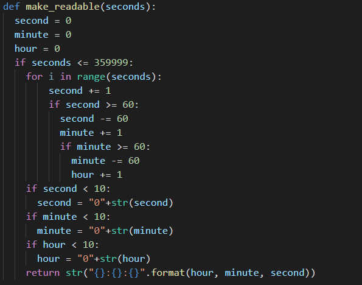
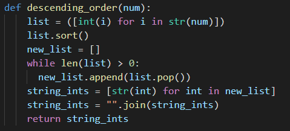
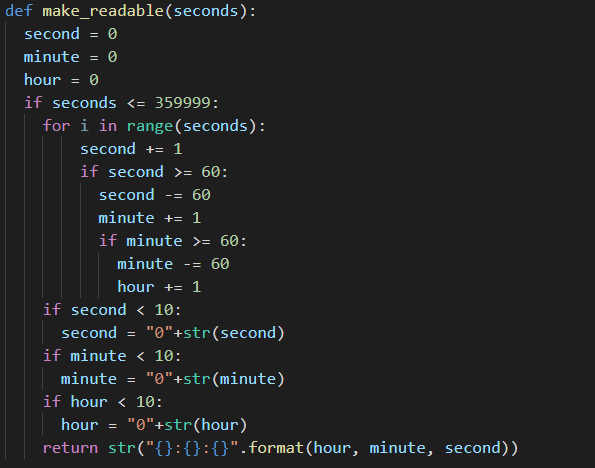
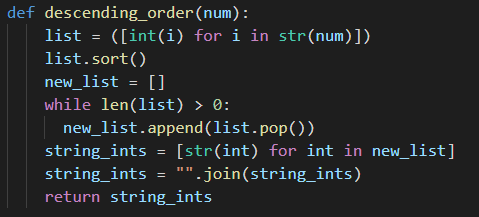

Language: Python
This repository is open to anyone interested in solving the Project Euler problems.
I started this project in December 2021 in order to enhance
my computing and mathematical skills.
Besides making games and softwares, I also like coding
for the sake of learning and bettering myself.
Here you can find my ongoing Side-Projects which
you can analyze and copy the code of.
Language: Python
This repository is open to anyone interested in solving the Project Euler problems.
I started this project in December 2021 in order to enhance
my computing and mathematical skills.
Language: Python
This repository is open to anyone interested in solving Codewars katas.
I started this project in January 2022 in order to enhance
my computing and mathematical skills as well.
 



Language: Python
A Discord Bot that translates any sentence into its UwU and OwO form.
UwU Translator Bot is a discord bot written in Python with discord.py module.
This bot is available on top.gg.